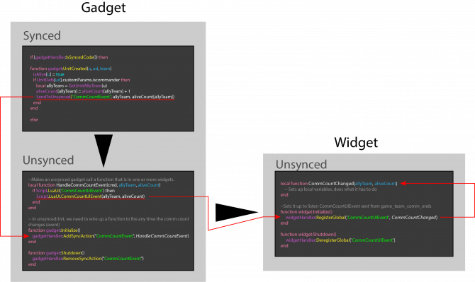

Lua sync to unsync
Synced -> Unsynced Communication
Using SendToUnsynced
Currently, the recommended way is to use the SendToUnsynced call-in to send an event to the unsynced portion of a gadget. It's also possible to send an event from a gadget to a Widget. First, you send an 'internal event' from synced to unsynced space, within the gadget, then you can create an event which may be subscribed to by any widget. Follows an image showcasing that flow and working/tested code:

https://pastebin.com/b1eVWn1d
{kind=link}
Bear in mind that only one widget can hook to one LuaUI event at once, trying to listen to it in multiple widgets will lead to erratic behavior. Workaround here would be firing multiple LuaUI events, one for each consuming widget.
The first parameter in the event handler (in the example, it's named 'cmd' in HandleCommCountEvent) is rarely used. It holds the name of the synced event, so you know what synced event fired the function, as in the following example:
<syntaxhighlight lang="lua">local function func(str)
if str == "abcd" then
-- do something
elseif str == "efgh"
-- do another thing
end
end
gadgetHandler:AddSyncAction("abcd", func) gadgetHandler:AddSyncAction("efgh", func)
SendToUnsynced("abcd") </syntaxhighlight>
Futher reading in the following forum thread: https://springrts.com/phpbb/viewtopic.php?t&t=11408
Using globals (96.0 and previous)
When making a gadget you will sometimes want to combine synced and unsynced code.
For example if you do some things with units, that code will need to be synced.
The UnitDestroyed, UnitFinished etc. callins can only be called in synced code. Using them inside unsynced code is not going to work.
If you want to draw on the screen (for example to mark units) then the drawing will have to happen in unsynced code.
The following example demonstrates how to change the value inside the synced block of code and read the value in the unsynced block of code:
<syntaxhighlight lang="lua"> if (gadgetHandler:IsSyncedCode()) then
--SYNCED CODE
local number = 10 -- declaring local variable 'number'
function gadget:SomeSyncedCallin(...)
number=number+1 -- increment variable's value by one
_G.number=number -- save the new value into a global variable
end
else
--UNSYNCED CODE
function gadget:SomeUnsyncedCallin(...)
Spring.Echo(SYNCED.number) -- print the global variable's value on screen
end
end </syntaxhighlight>
97.0+
As of 97.0 unsynced gets most of the callins available to synced (excepting those which control synced actions e.g. AllowUnitCreation etc) which means that forwarding data from synced to unsynced is now not always required. Additionally in 97.0 there were changes to the behaviour of the SYNCED table described above.
Change 1: SYNCED does a copy on access now and so is slow:
Bad:
<syntaxhighlight lang="lua">for i=1,100 do ... SYNCED.foo[i] ... end</syntaxhighlight>
Good:
<syntaxhighlight lang="lua">local foo = SYNCED.foo; for i=1,100 do ... foo[i] ... end</syntaxhighlight>
Change 2: SYNCED. can't be localized in global scope anymore:
Bad:
<syntaxhighlight lang="lua">local foo = SYNCED.foo; function gadget:DrawWorld() ... foo ... end</syntaxhighlight>
Good:
<syntaxhighlight lang="lua">function gadget:DrawWorld() local foo = SYNCED.foo; ... foo ... end</syntaxhighlight>
Here is a (older) description by quantum:
[LCC]quantum[0K] every time there is a new target, i send "addTarget" and its number to unsynced
[LCC]quantum[0K] when a target is removed from the list, i send "removeTarget" and its number
[LCC]quantum[0K] this wierd stuff:
[LCC]quantum[0K] _G.laserEventArgs = eventArgs
[LCC]quantum[0K] SendToUnsynced("LaserEvent")
[LCC]quantum[0K] _G.laserEventArgs = nil
[LCC]quantum[0K] puts the eventArgs table somewhere were unsynced can find it
[LCC]quantum[0K] sends a signal to unsynced called "LaserEvent"
[LCC]quantum[0K] and removes the table
[LCC]quantum[0K] on the unsynced side, _G.laserEventArgs becomes SYNCED.laserEventArgs
[LCC]quantum[0K] this copies it to another table, ready for reuse: for k, v in spairs(SYNCED.laserEventArgs) do
[LCC]quantum[0K] eventArgs[k] = v
[LCC]quantum[0K] end
[LCC]quantum[0K] also, this: gadgetHandler:AddSyncAction("LaserEvent", HandleLaserEvent)
[LCC]quantum[0K] means that i want the HandleLaserEvent function to be called every time i do SendToUnsynced("LaserEvent")